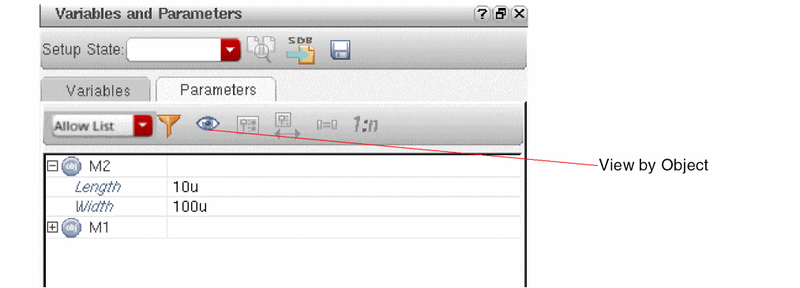
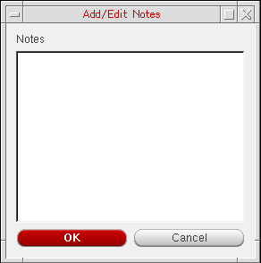

3
Working with Design Variables and Instance Parameters
You can use design variables and Component Description Format (CDF) instance parameters to set component values for simulation. Design variable values apply to specific tests. The scope of a CDF parameter value depends on which
See the following topics for more information:
Working with Design Variables
You can add, change, and delete design variables on the
- Adding a Design Variable
- Changing the Value of a Design Variable
- Hiding Overridden Design Variables for a Test
- Deleting a Design Variable
- Changing the Order of Design Variables
- Enabling or Disabling Design Variables
- Saving Design Variables
- Toggling the View on the Variables tab of the Variables and Parameters Assistant Pane
- Finding Design Variables in Schematic
- Copying Design Variable Values to the Schematic
- Copying Design Variable Values from the Schematic
- Importing Design Variables from an ADE State
- Displaying Design Variables on the Schematic
- Defining Variables in a File
- Adding Variable Tags
Adding a Design Variable
To add a design variable to a test, do the following:
-
Choose Window – Assistant – Variables and Parameters.
The Variables and Parameters pane appears.

-
On the Variables tab of the Variables and Parameters pane, right-click the test and choose Add Variable.
-
Click where it says Click to add variable in an expanded test tree on the Data View pane or on the Variables tab of the Variables and Parameters pane.
-
In an expanded test tree on the Data View pane, right-click a design variable and choose Add Variable.
Alternatively, click Click to add variable.
The Create Test Variable form is displayed.
-
Click where it says Click to add variable in an expanded test tree on the Data View pane or on the Variables tab of the Variables and Parameters pane.
-
In the Variable Name field, type a name for your design variable.
The name must begin with a letter or the underscore character (_), and can contain only letters, numbers, or underscore characters. -
In the Variable Value field, type a value or expression for your design variable.
The expression can be an equation, a function, or another variable. The simulator evaluates the expression which must follow Analog Expression Language (AEL) syntax.
Values from the results of one test can be used in the expressions for the local variables of another test. For this, use the calcVal function. For example, if an output oftest2isoutput1, as shown below.calcVal("output1" "test1")
In such cases, simulations for test1 are run before other tests so that the results are available for calculations. -
Click OK to close the form.
Your design variable and its value appears in the expanded test tree on the Data View pane and on the Variables tab of the Variables and Parameters pane.You can also define variables in a definitions file.By default, the design variables defined for your tests are not automatically promoted as global variables in the Global Variables tree on the Data View assistant pane and the Variables tab of the Variables and Parameters assistant pane. You can set the autoPromoteVarsToGlobal environment variable inmaestro.cdsenvtotto automatically promote new design variables as global variables. The design variables are displayed with a strikethrough because the settings for a global variable override the settings of design variables that have the same name as the global variable. For example, in the following figure, the design variables specified for the test namedmyFirstTestare automatically added as global variables. The design variables are displayed with a strikethrough because the global variables override the design variables.
nil.calcVal function for a design variable at Using the calcVal SKILL Function in a Design Variable in the ADE Assembler.Changing the Value of a Design Variable
By default, all the design variables use the value set for the corresponding global variables. However, if required, you can choose to use a different value for a design variable for a specific test.
If you want to change the value of a design variable that is overridden by a global variable, you must do one of the following:
-
Disable the global variable for test in which you want to change the value of the design variable.
For more information, see Disabling Global Variables for Specific Tests. -
Disable the global variable for all tests.
For more information, see Enabling and Disabling Global Variables for All Tests.
To change a design variable, do the following:
-
In an expanded test tree on the Variables tab of the Variables and Parameters pane, double-click in the Value cell of the design variable you want to change.Alternatively, in an expanded test tree on the Data View pane, double-click the value of the design variable you want to change.
-
Type a new value or expression for the design variable.
If required, you can specify multiple values, a range, or an inclusion or exclusion list for a design variable. For details, refer to Adding or Changing a Variable or Parameter Specification. -
Press Return or click anywhere outside that table cell.
The new value appears in the Value cell for that design variable.
Alternatively, you can change the value of a design variable in the Editing Design Variables form as follows:
-
In an expanded test tree on the Data View pane or on the Variables tab of the Variables and Parameters pane, right-click the design variable and choose Edit Variable.
The Editing Design Variables form appears. -
In the Design Variables table, select the design variable you want to change.
The row appears highlighted and the Selected Variable fields, Name and Value (Expr), contain the name and value of the design variable you selected. -
Click in the Value (Expr) field.
The editing cursor appears where you clicked. -
Type a new value or expression.
To specify a valid sweep value, ensure that:- The value is not a blank string or does not contain a whitespace
- If contains a range, it has the start, step, and stop values separated by colons, commas, spaces, or a combination of these
- If specified as an expression, it is written in correct SKILL syntax and contains balanced parenthesis and quotes
- If contains a file path, it is enclosed in double quotes so that it is not evaluated
-
Click Change.
The new value appears in the Design Variables table. - Click OK.
When a global variable is disabled for a test and the design variable uses sweep values, separate design points are created for that test on the Results tab. For more details on the results display, see Viewing Simulation Results When Design Variables Use Swept Values.
Using Expression Builder for Design Variables and Global Variables
Design variables or global variables can contain static values or expressions that are evaluated to get values at the run time.
You can either directly type in expressions in the Value column for the variables or use the Expression Builder to use the expression building prompts.
- Click in the Value column of a variable.
-
A text box is displayed to enter a value or expression. In addition, the Open expression builder (
 ) command is also displayed to the right of that box.
) command is also displayed to the right of that box. -
Click Open expression builder.
The expression builder is displayed.
Build an expression in the space given on the expression builder, as shown below.
If you use an existing function in the expression, the tool shows prompts to add argument values or to balance the braces.
You can useAlt + Enterto enter line breaks while creating an expression in the expression builder. This improves readability, and makes it easy to edit long expressions.
These line breaks in the expression are retained even when you close and reopen Expression Builder. Line breaks in the expression are retained also when outputs are exported to the CSV file. When you import these outputs using the CSV file again, line breaks in the expression remain as they were earlier. -
After the expression is complete, click
 on the expression builder.
on the expression builder.
The expression builder is closed and expression is displayed in the Value column.
Hiding Overridden Design Variables for a Test
If the autoPromoteVarsToGlobal environment variable is set to nil, a design variable for a test is automatically promoted as global variables and the variable appears with a strikethrough in the list of variables for that test.
You can choose to hide all the overridden variables for a test and to display only those variables for which the value specified for a test is used. For this, do any one of the following:
-
In the Data View pane, expand the design tree, right-click Design Variables and choose Hide Overridden Variables.
- On the Variables tab of the Variables and Parameters assistant, right-click a test name and choose Hide Overridden Variables.
In both the Data View pane and the Variables and Parameters assistant, the overridden variables are hidden for the test.
Deleting a Design Variable
To delete a design variable, do the following:
- In an expanded test tree on the Data View pane or on the Variables tab of the Variables and Parameters pane, right-click the design variable you want to delete and choose Delete Variable.
Changing the Order of Design Variables
You can change the order in which the design variables are listed in the Data View assistant. A change in the order of design variables in this assistant also changes the nesting of sweep points.
To change the order of design variables, do the following in the Data tab of the Data View assistant:
- Expand Global Variables to view all the variables.
-
Click a variable name and drag it.
A blue indicator line appears at the location where you have moved it. The tooltip also shows the name of the variable being moved.
- Drag the indicator line to the desired location and drop the variable.
Enabling or Disabling Design Variables
To enable or disable the design variables:
- In the Data View assistant, expand the Design Variables tree for a test.
- Select one or more variables, right-click and choose Enable/Disable from the context-sensitive menu.
- The current status of the selected variables is toggled.
For example, in the following scenario, the Enable/Disable command enables variables vdc and myStart, and disables vdchi.
Copying Variable Values to Other Tests
If you have edited the values of variables in one test and want to use the same values in other tests, you can copy variable values to those tests. The Copy Variable Value to Other Tests command in the context menu of a design variable lets you copy values of variables to all or selected tests in the setup.
To copy the values of variables from one test to all other tests in the setup:
- In the Data View assistant, select one or more variables in the source test from which you need to copy values.
-
Right-click one of the selected variables and choose Copy Variable Value to Other Tests – All Tests.
The values for the selected variables are copied from the source test to all other tests that have the same variable.
Similarly, you can copy values from one test to all enabled, all disabled, or a selected test by using the following commands in the same context menu of a design variable:
- Copy Variable Value to Other Tests – All Enabled Tests
- Copy Variable Value to Other Tests – All Disabled Tests
- Copy Variable Value to Other Tests – test-name
To copy the values of variables to multiple tests:
- Select one or more variables in the source test from which you need to copy values.
-
Right-click one of the selected variables and choose Copy Variable Value to Other Tests – Select Tests.
The Tests for Variable Copy form is displayed.
- In the Available Tests list of this form, select the names of the tests to which you want to copy the variable values.
- Click the right arrow to move the selected tests to the Copy Variable Values to Tests list.
-
Click OK.
The values of the variables are copied to the selected tests.
- ADE Assembler copies only the variable values. It does not copy the enabled or disabled status of the variable. To copy variables from one test to another, use Multi-Test Editor.
- The tool copies the variable values if the destination test has a variable with the same name. If no variable is found with the same name, the tool does not add a new variable to the test.
Saving Design Variables
Your design variables are saved with your ADE Assembler setup. To perform an explicit save, do the following:
-
Choose File – Save.
The program saves your setup information, including design variables. The program reloads these values the next time you open this design cellview.
Toggling the View on the Variables tab of the Variables and Parameters Assistant Pane
To toggle the view of variables on the Variables tab of the
-
Right-click any item and choose Toggle View.
If you were viewing the variable categories, the view changes to a tree of variables.
If you were viewing a tree of variables, the view changes to the variable categories view.
Finding Design Variables in Schematic
You can search for a design variable in the schematic to identify its location. To find a variable, do the following:
- In the Data View pane, expand the test tree.
- Expand the Design Variables tree.
Right-click a design variable and choose Find Variable.
Alternatively, do the following on the Variables tab of the
- Toggle the view to show the variables names. Expand a variable tree to show the test names.
-
Right-click the test name and choose Find Variable.
If the variable is found in the schematic, the design is opened in the design tab and all the instances are highlighted, as shown below.
In case of a hierarchical design, if the variable is not found in the top level of design, the tool traverses down the hierarchy and highlights the variable in the lower level, where found.
If the variable is not found in the schematic, a warning message, as shown below, is displayed in the CIW.Variable ‘
<var-name>’ not found on the schematic.
Copying Design Variable Values to the Schematic
If you change design variables in your simulation setup and want to copy the values back to the cellview before you save the schematic, do the following:
-
On the Variables tab of the Variables and Parameters pane, right-click the test and choose Copy to Cellview.Alternatively, in an expanded test tree on the Data View pane, right-click a design variable and choose Copy to Cellview.The program copies design variable values from the Variables tab of the Variables and Parameters pane to the cellview.
Alternatively, you can do the following:
-
On the Variables tab of the Variables and Parameters pane, right-click the test and choose Edit Variable.Alternatively, in an expanded test tree on the Data View pane, right-click a design variable and choose Edit Variable.The Editing Design Variables form appears.
- Select one or more variables you want to copy to the current cellview.
-
In the Cellview variables section, click Copy To.
The program copies the selected design variable values to the current cellview. - When you are done with the form, click OK.
Copying Design Variable Values from the Schematic
If you change design variables on your schematic and want to use these values in your next simulation, do the following:
-
On the Variables tab of the Variables and Parameters pane, right-click the test and choose Copy from Cellview.Alternatively, in an expanded test tree on the Data View pane, right-click a design variable and choose Copy from Cellview.The program copies design variable values from the schematic to the Variables tab of the Variables and Parameters pane.
Alternatively, you can do the following:
-
On the Variables tab of the Variables and Parameters pane, right-click the test and choose Edit Variable.Alternatively, in an expanded test tree on the Data View pane, right-click a design variable and choose Edit Variable.The Editing Design Variables form appears.
-
Click Copy From.
The program copies design variable values from the schematic to the Variables tab of the Variables and Parameters pane. - When you are done with the form, click OK or Cancel.
copyDesignVarsFromCellview environment variable to nil.Importing Design Variables from an ADE State
For details on importing the design variables and parameters by using the Loading State form, see “Loading State Information”.
Displaying Design Variables on the Schematic
To display the values of instance parameters that are design variables on the schematic, do the following:
-
In the CIW, choose Tools – CDF – Edit.
The Edit CDF form appears. - In the Scope group box, select the Library radio button.
- In the CDF Layer group box, select one of the following CDF types (see CDF Type in the CDF Commands chapter in the Component Description Format User Guide for information about these choices):
- In the Library Name field, select the library whose CDF you want to edit.
-
On the Edit CDF form, click the Interpreted Labels tab.
You can use interpreted labels to display parameter values, evaluated parameter values, net connectivity information, backannotated simulation information, and more. For more information, see “Specifying Label Information in the Component Description Format User Guide. - On the Interpreted Labels tab, click the Parameters(cdsParam) tab.
-
For paramEvaluate, select the full check box.
Design variables appear on your schematic.
Defining Variables in a File
You can define functions and global variables that are not design variables (such as model parameters and simulator parameters) in a definitions file. Cadence provides sample definition files for the Spectre circuit simulator in your_install_dir/tools/dfII/samples/artist/models/spectre (see defaults.scs and definitions.scs).
To set up a definitions file, do the following:
- Create the file in the directory you specify in the Include Paths field on the Simulation Files Setup form.
- In the Definition Files field on the Simulation Files Setup form, type the full UNIX path and name of the definitions file.
The simulator reads the definitions file when it starts.
Your definitions file can contain any of the following:
real R(real l, real w) { |
|
real PiRho() { |
For more information about defining functions in a definitions file, see “User Defined Functions (functions)” in the Spectre Circuit Simulator Reference.
- Example of a Polynomial Resistor as a Function of Temperature
- About Inherited Parameter Value Functions (iPar, pPar)
Example of a Polynomial Resistor as a Function of Temperature
You can define a polynomial resistor as a function of temperature as follows:
real rpoly(real value, real tdc) {
value*(1+.01*(tdc-25)+.002*(tdc-25)**2);
}
You can use this function to specify the value of a resistor as follows:
rpoly(1k,tempdc)
You can set resistor properties tc1 and tc2 so that the system automatically models resistor temperature effects, rather than defining your own functions.
About Inherited Parameter Value Functions (iPar, pPar)
You can use inherited parameter value functions iPar and pPar in conjunction with built-in functions or user-defined functions.
The following diagram shows a schematic example using pPar:

For more information about iPar and pPar parameters, see
Adding Variable Tags
To filter or search through a long list of design and global variables, you can assign specific tags to them.
To do this, perform the following steps:
-
Right-click a variable or a group of variables in the Data View assistant and choose Tags — Add/Edit Tags. You can select both design and global variables at once.
The Add/Edit Tags form is displayed.
-
In the Assign New Tags field, specify the tag you want to assign to the variable.
This tag is added to the Existing Tags section of the form as well as in the Tags submenu of the context menu for global variables.
After adding tags for multiple variables you can choose to assign the existing tags to another variable by selecting the check boxes against them.
Alternatively, you can right-click a variable or a group of selected variables and select the tag you want to assign from the Tags submenu.
You can then hover over a variable to see the associated tag in the tooltip. This information can also be viewed in ADE Explorer.
A tag added to a design variable is also visible for the global variable with the same name, and vice-versa.On exporting the variables to a CSV file, the tags related to the variables are also exported. You can then import that CSV file to a different session and retain the tag assignments.To clear the tags for specific variables, right-click the variable and choose Clear Tags from the Tags submenu.
Grouping Variables using Tags
You can group global and design variables according to the tags assigned to them. To do this:
-
Right-click the Design Variables or Global Variables section in the Data View assistant and select Group By Tags.
This groups the variables in both, the Design Variables and Global Variables sections according to the assigned tags and creates sub-trees namedTag:tagname.
Variables that do not have any assigned tags are displayed in a sub-tree namedTag:untagged.
You can also right-click a tag group name and select or deselect all variables.

To ungroup the tags, re-select the Group By Tags command from the Design Variables or Global Variables context menu.
Assigning Tags to Corners
- Open the Corners Setup form.
-
Specify a tag or a space-separated list of tags for each corner in the Tags row.
The tag names must be unique and alphanumeric with no blank spaces. You can use _,-, +, # and @ special characters in the tags for corners. The *, =, <, >, ?, |, ', \\, \", ~, (, ), /, ;, &, and $ special characters are not supported.
For example, let us consider the following setup.
Here, the tags16nm,20nm, and,28nmhave been assigned to the cornerff_28while the tag28nmhas been assigned to the cornersss_28andss_20.
Alternatively, you can edit the corner definitions through a CSV or SDB file and add atagsrow as shown in the figure.
On importing this CSV or SDB file through the Corners Setup form, the specified tags get added to the Tags row.
You can then hover over a corner to see the associated tag in the tooltip. This information can also be viewed in ADE Explorer.
To remove a tag, select it and press the Delete key.
Grouping Corners using Tags
You can group corners according to the tags assigned to them. To do this:
-
Right-click the Corners section in the Data View assistant and select Group By Tags.
This groups the corners according to the assigned tags and creates subtrees namedTag:tagname.
The corners with no tags specified to them are displayed under a subtree namedTag:untagged.You can also set the variableenableGroupByTagsForCornersto use this option.
To ungroup the tags, re-select the Group By Tags command from the Corners context menu.
Related Topics
Filtering Variables and Corners
You can use tags, variable names, and corner names to sort or filter a long list of variables. There are two ways to do this.
-
In the filter of the Name column of the Data View assistant, use the format variablename cornername
tag:tagname. -
Right-click the filter and set the Find with criterion to filter out the variables and corners with all, any, exactly, or none of the specified names and tags.
By default, the All Of The Words option is selected. However, it is recommended to select the Any Of The Words option.
For example, setting the filter to Any Of The Words and using the commandrloadff_28tag:28nmin the filter of the Name column will filter out:-
The variable with the name
rload -
The corner with the name
ff_28 -
The variables and corners that have the tag
28nmassigned to them
tag:tag1tag:tag2.
Alternatively, you can click the Toggle visibility of the Filter column In the Corners Setup form.
In the resulting Filter column, specify the tags you want to filter the corners by.
For example, let us consider the following setup.
Here, on specifying the tag20nmin the Tags row of the Filter column, the cornerff_28will get filter out.
-
The variable with the name
Working with Device Instance Parameters
- Change the value of a device instance parameter for a simulation without affecting the value on the schematic
- Disable the changed value of a device instance parameter for a simulation
- Sweep a device instance parameter
- Disable callbacks on swept device parameters
- Create matched device parameters
- Create ratio-matched device parameters
- Backannotate changed device instance parameter values back to the schematic
See the following topics for more information:
- Selecting Instance Properties to be Parameterized for Simulations
- Changing the Value of a Device Instance Parameter for Simulation
- Disabling a Changed Device Instance Parameter Value for a Simulation
- Sorting Parameters by Properties and Objects
- Filtering Device Instance Parameters
- Creating Custom Device Filters
- Changing the Order of Device Parameters
- Deleting a Parameter
- Creating Parameter Ranges
- Working with Parametric Sets
- Working with Parametric Sets
- Enabling and Disabling Parameters
- Adding Notes for Parameters
- Adding or Changing a Variable or Parameter Specification
- Creating Matched Device Parameters
- Creating Ratio-Matched Device Parameters
- Disabling Callbacks on Swept Device Parameters
Selecting Instance Properties to be Parameterized for Simulations
To select instance parameters for the design associated with your test, do the following:
-
Click Click to add parameter in the Parameters tree on the Data View assistant.
The schematic associated with the test is displayed in a new tab in the ADE Assembler window and the menu changes to that of Virtuoso Schematic Editor and theParameterizationworkspace is set.
In this workspace, the Circuit Prospector, and the Variables and Parameters assistant panes are displayed. The Parameters tab on the Variables and Parameters assistant pane is also opened.
-
On the schematic, select one or more device instances.
To select more than one instance, hold down theShiftkey and click each instance one by one or by dragging a selection box around a set of instances. Alternatively, you can use the Navigator assistant pane to select the instances.
The parameter properties of the selected devices are listed in the upper half of the Parameters tab of the Variables and Parameters assistant pane.
- Expand a property tree to view the device names.
-
Right-click an instance name and choose Create Parameter.
Alternatively, click Create Parameter on the toolbar.
A parameter is created for the selected property of the selected device instance. The details of the added parameter appear in the lower half of the Variables and Parameters assistant pane.
The value to be used (shown in the Value column) is same as that of the value of the parameter in the schematic (also shown in the Design Value column). You can specify a different value in the Value column to be used while running simulation.
You can hover above an instance name to view the related test information along with the parameter name and prompt name for that instance.
For more details, refer to Changing the Value of a Device Instance Parameter for Simulation.
Additional Points to Note
- It is possible to create parameters for the properties of parametrized cells (Pcells) in the design.
-
The default view for the Parameters tab is
View by Property. That is why when you select an instance in the schematic, by default, a list of property names is displayed. However, you can change the view to list the instance names by clicking the toggle on the toolbar of the Parameters tab, as shown below.
You can also set the default view by setting the defaultParametersViewBy environment variable. -
If you have selected more than one instance in the schematic and each instance has a different design value for a property, the value is shown as
(various).
-
When the view is set to
View by Property, you can select multiple devices in the schematic and use the Create Parameter command to create parameters for all the selected devices simultaneously. For example, if you have selected two instances,M1andM2, on the schematic. In the Variables and Parameters assistant, right-clickLength, and choose Create parameter. TheLengthparameter is created for bothM1andM3simultaneously. -
You can also create matched or ratio-matched parameters by using the Match Parameters
 or Ratio Matched Parameters
or Ratio Matched Parameters  commands on the toolbar. For more details, refer to Creating Matched Device Parameters and Creating Ratio-Matched Device Parameters.
commands on the toolbar. For more details, refer to Creating Matched Device Parameters and Creating Ratio-Matched Device Parameters. - If the devices have a large number of parameter properties, you can use filters to show only the relevant set of properties. For more details, see Filtering Device Instance Parameters.
-
When you create parameters, the lower half of the Variables and Parameters assistant pane displays the instance name, parameter name, parameter value, and the value of property in the design. You can also show the names of library, cell, and view of the instances. For this, right-click any column name in the lower half of the assistant and choose Show Lib, Cell, View. Three more columns are displayed, as shown below.
You can also show either one of these columns, as required, using the commands in the context-sensitive menu for this section of the assistant pane. If required, you can edit the names of library, cell, and view in this column. ADE Assembler validates the existence of the newly specified library, cell, and view. If found, the details are updated in the assistant pane. Otherwise, an error is displayed in the CIW. - When you open a saved maestro view, if the cellview details of the instance parameters are different, the Variables and Parameters assistant shows all the columns to display the cellview details.
Changing the Value of a Device Instance Parameter for Simulation
To change the value of a device instance parameter for simulation, do the following:
-
On the upper half of the Parameters tab on the Variables and Parameters pane, click the value of the device instance parameter you want to change and type a new value.You might have to expand the tree by clicking the plus sign to the left of the instance name at the root of the tree.To view only the parameters in the Parameters tab, see Sorting Parameters by Properties and Objects.For example, change the value of the Length parameter from
400nto350n.
The instance parameter and its new value (350n) appear in the lower half of the Parameters tab on the Variables and Parameters assistant pane. The simulator uses this value when run simulations.
As shown for the M6 instance in the above example, you can sweep the values of parameters.
To specify a valid sweep value, ensure that:
- The value is not a blank string or does not contain a whitespace
- If contains a range, it has the start, step, and stop values separated by colons, commas, spaces, or a combination of these
- If specified as an expression, it is written in correct SKILL syntax and contains balanced parenthesis and quotes
- If contains a file path, it is enclosed in double quotes so that it is not evaluated
Alternatively, you can do the following:
-
Right-click the instance parameter whose value you want to change and choose Create Parameter.
The instance parameter and its value appear in the lower half of the Parameters tab on the Variables and Parameters assistant pane. - Double-click the value in the lower half of the Parameters tab and type a new one.
The parameter is also displayed in the Parameters tree in the Data View pane.
Important Points to Note
- You can add parameters only by using the Parameters tab of the Variables and Parameters assistant pane. Parameters cannot be directly added in the Data View pane.
- At any time, you can reset the original value, which was set in the design schematic, for a parameter. For this, in the lower half of the Parameters tab, right-click a parameter name and choose Set to Design Value.
Sweeping Pcell Parameters
You can sweep Pcell parameters in the same way as described above for other device parameters. The sweep values are used to create multiple design points for simulations. During netlist creation, ADE Explorer and ADE Assembler creates subcircuits for each swept Pcell parameter value.
This feature is helpful for advanced node designs that contain Pcells with parameters to adjust circuit topology changes, such as the number of stacked components represented by a device. You can run local or global optimization to identify the best value for the Pcell parameters to optimize your designs.
Disabling a Changed Device Instance Parameter Value for a Simulation
To disable a changed device instance parameter value for a simulation, do the following:
-
In the lower half of the Parameters tab on the Variables and Parameters assistant pane, deselect the check box for that parameter.Alternatively, in an expanded Parameters tree on the Data View pane, deselect the check box for that parameter.The next time you click the Run Simulation button, the simulator uses the device instance parameter value from the schematic.
Deleting a Parameter
To delete a parameter, do the following:
- In an expanded Parameters tree on the Data View pane or on the lower part of the Parameters tab of the Variables and Parameters pane, right-click the parameter you want to delete and choose Delete Parameter.
Sorting Parameters by Properties and Objects
By default, in the upper part of the Parameters tab of the
To sort the parameters by object names, do the following:
-
Right-click the upper part of the Parameters tab and choose View by Object. Alternatively, click (
) to toggle the view types. The view changes to a tree of objects.
You can set the preferred view as the default view by using the defaultParametersViewBy environment variable.
Filtering Device Instance Parameters
To filter the device instance parameters that appear on the upper half of the Parameters tab on the
-
In the Filter drop-down list, select one of the following:
Displays parameters specified in the list that you can edit by using the
Filter Setup form.Displays all editable CDF parameters with non-nil CDF values
Only those device instance parameters that meet the filter specification appear in the upper half of the Parameters tab on the Variables and Parameters assistant pane.
By default, the allow list filter shows the parameters set by the defaultParametersAllowList environment variable. You can edit this list in either of the following ways:- By editing the environment variable
-
By using the Filter Setup form that is displayed when you click Allow List Filter (
) on the toolbar.You can use the
*wildcard character to specify the parameter names in the Allow List filter. For example,*inger* res*.
The Allow List Filter command is enabled only when the Filter drop-down list is set toAllow List. For other filter types, this isdefaultParametersAllowListnot applicable.If you have defined any custom device filter using theaxlRegisterCustomDeviceFilterfunction, the name of that filer also appears in the drop-down list. See Creating Custom Device Filters for more information. However, it is recommended to use theAllow Listfilter to customize the list of parameters to be displayed.
Creating Custom Device Filters
To create a custom device instance parameter filter, do the following:
-
Write a procedure to define your custom filter.
For example, you want to filter out theTotal Width,ThresholdandS/D Metal Widthparameters for all instances of thepmos2vcell, write the following procedure:(procedure (myCustomFilter inst simulator)
(let (paramList libName cellName instName)
(setq instName inst->name)
(setq cellName inst->cellName)
(setq libName inst->libName)
(setq paramList list())
;;Example filter for hiding Total Width, Threshold and S/D Metal Width
;;parameters for instances of cells whose names start with pmos2v
(rexCompile "^pmos2v")
(if (rexExecute cellName) then
(setq paramList
(list
(list "fw" (get inst "fw"))
(list "l" (get inst "l"))
(list "fingers" (get inst "fingers"))
(list "m" (get inst "m"))
)))
paramList
)
)
You must specify the CDF parameter names and not the CDF prompt names in the procedure. For example, you must specify the CDF parameter namefwand not the CDF prompt nameFinger Widthin the procedure.You can also write procedures to filter parameters of instances starting with specific names (for example, all instances starting with the namePM), or to filter parameters of instances of cells in a library (for example, filter parameters of all instances of thepmos2vcell in thegpdk090library). -
Call axlRegisterCustomDeviceFilter as follows:
axlRegisterCustomDeviceFilter "My Filter" 'myCustomFilter
The function returnstif the registration is successful; otherwise,nil.
My Filter appears in the Filter drop-down list.
To load your custom filters each time the program starts, you can declare and register them in your .cdsinit file.
When you select My Filter in the Filter drop-down list, the device parameters Total Width, Threshold and S/D Metal Width do not appear on the upper half of the Parameters tab on the
Changing the Order of Device Parameters
When there are multiple parameters in the Parameters list of the Data View assistant, you can change the order in which they are listed. A change in the order of device parameters in this assistant changes the nesting of sweep points as well.
To change the order of a parameter, do the following in the Data tab of the Data View assistant:
- Expand Parameters to view all the parameters.
-
Click a parameter name and drag it.
A blue indicator line appears at the location where you have moved it. The tooltip also shows the name of the parameter being moved.Since all the parameters for a device are placed together, you cannot move only a single parameter for a device to another location in the list. Therefore, while you are moving a device parameter, all the other parameters for the device are also highlighted and moved, as shown below.While you are dragging the parameters, you cannot drop the device parameters in the midst of a list of parameters for another device. The pointer changes from a blue line to a stop icon to indicate that the movement is not allowed.
- Drag the indicator line to the desired location and drop the parameter.
You can also select the parameters for more than one device and move them together.
Creating Parameter Ranges
You can specify a parameter range for an individual parameter by editing the value field in the Data View pane or the Variables and Parameters assistant, as shown below.
However, if the parameter list is long, applying a parameter range for each parameter individually can take a long time. Instead, you can use the Create Parameter Range command in the context-sensitive menu of the Parameters list. This command applies a standard parameter range to a set of selected or all the parameters in the Parameters list.
To create a parameter range for more than one or all the parameters together, perform the following steps in Data View pane or the lower part of the Variables and Parameters assistant:
- Select one or more variables in the Parameters list for which you want to create parameter range. Press the Shift or Ctrl key and select the parameter names.
- Right-click a parameter in the Parameters list and choose Create Parameter Range.
Alternatively, click Create Parameter Range ( ) on the toolbar given on the Parameters tab of the Variables and Parameters assistant.
The Create Parameter Ranges form appears, as shown below.
-
In this form, you can specify parameter ranges in one of the following two ways:
-
Parameter range as percentage of the design value: This is the default way. In this case, the Percentage of design value option is selected and the parameter range is relative to the value of variable. If the variable is assigned any value in the Data View pane, that value is taken as a reference. If there is no value assigned to this variable in the Data View pane, the value for this variable is taken from the design.
By default, you can specify a common percentage value for both the upper and the lower limit in the +/- % field. The lower limit is the value of a parameter in the design minus the specified % of the same design value. Similarly, the upper limit is the value of a parameter in the design added to the specified % of the value of parameter in the design.
Alternatively, select the Specify +/- % separately option. When you select this option, the following fields appear in the form.
In these fields, you can specify separate % values for the upper and lower range limits. -
Parameter range with a specific minimum and maximum value: This option is used to specify specific minimum and maximum value for the parameter range. These values might not be relative to the value of a parameter in the design. To specify these values, select the Specify minimum/maximum values option. The Minimum Value and Maximum Value fields appear in the form.
Specify the minimum and maximum values of the parameter range in their respective fields.
-
Parameter range as percentage of the design value: This is the default way. In this case, the Percentage of design value option is selected and the parameter range is relative to the value of variable. If the variable is assigned any value in the Data View pane, that value is taken as a reference. If there is no value assigned to this variable in the Data View pane, the value for this variable is taken from the design.
-
Next, you can specify how to create intermediate values within the range. For this, you have the following two options in the drop-down list displayed in the lower section of the form:
- Step Size: Use this option to specify a step size between two steps. The tool automatically creates steps between the two outer limits of the range at a gap of the given step size. In this case, ranges of all the design parameters will have the same step size, but the number of step values will depend on the minimum and maximum values.
- Number of Step Values: Use this option to specify the number of step values to be created between the two range limits. The tool automatically calculates the required step size and creates the intermediate values. In this case, the number of step values will remain same for all the design parameters, but the step size will vary.
-
Select the Limit to Integer Values option to specify that the step values should be only integer numbers. This would be required for parameters that cannot have decimal values, such as mfactor and number of fingers. When you select this option, parameter range is not created if the step values contain decimal values.An alternate way to limit the creation of range for parameters defining m-mfactorfactor and number of fingers to only integer values is to add the names of such parameters in the
layoutXL.mFactorNamesandlayoutXL.lxFingeringNamesenvironment variables. ADE Assembler automatically sets only integer ranges for the parameters listed in these variables. - Click OK to close the form.
ADE Assembler creates the parameter ranges for all the parameters and updates the Data View and the Variables and Parameters assistants.
When the Variables and Parameters assistant is open in the schematic view and you select an instance to create a parameter, you can right-click the instance in the top area of the assistant and use the Create Parameter Range command to create a parameter as well as to apply a range of values for it.
Working with Parametric Sets
By default, ADE Assembler creates all possible sweep combinations by pairing each value of a variable or parameter with all values of the other variables or parameters. By using parametric sets, you can create a selected set of sweep combinations by picking values from the same ordinal position for all the variables or parameters in that parametric set. This reduces the number of design points, therefore, reducing the number of simulations.
You can create parametric sets when you need to run simulations for a specific set of sweep values for different parameters. This helps in saving the simulation run time.
In ADE Assembler, you can create parametric sets for the design variables at the test or global level, and for device parameters.
Creating Parametric Sets in ADE Assembler
Consider an example where two global variables, vdd and vin_ac, are grouped together to create a parametric set as shown below.
In this case, ADE Assembler creates three sweep value sets that you can view in the Run Preview tab, as shown below.
The sweep value sets are created by picking values from the same ordinal position for all the variables or parameters in a parametric set.
The following figure shows that while running simulations, ADE Assembler creates three design points.
As compared to this, if the parametric sets are not created, ADE Assembler creates nine design points, where each value of vdd is paired with all three values of vin_ac.
Using Parametric Sets Created in ADE Explorer
If you create parametric sets for the design variables of a test in ADE Explorer, they are reflected in the Data View assistant in ADE Assembler.
For details on how to create and manage parametric sets in ADE Explorer, refer to
Creating Parametric Sets
To create a parametric set, do the following in the Data View pane or the Variables and Parameters assistant:
- Hold down the Ctrl key and select two or more variables or parameters that you want to group together.
-
Right-click and choose Group as Parametric Set.If you are using the Variables and Parameters assistant, click the test name or variable value in the rows under the variable name, as shown below.
-
If required, specify sweep values for the variables. For different variables, you can specify sweep values in different format. For example, you can specify values for variables as shown below.
However, it is important that the number of sweep points is same for all the variables or parameters in a parametric set. If the number of sweep values are not equal, ADE Assembler flags an error during the simulation run.
Note the following changes in the Data View pane and the Variables and Parameters assistant:
- The variables or parameters in a parametric set are bound as a group.
- When you create a parametric set, the list of variables is realigned to display all variables or parameters of a group together.
-
Each parametric set is highlighted with a different color, as shown below.
-
When you group two more variables or device parameters together, the tool automatically identifies matched parameters and includes them in the parametric set. Consider an example. From the Parameters list, select two variables,
M4/landM6/land add them to a parametric set, as shown below.
A parametric set is formed and two more variables M7/l and M8/l are also added to that set. This is because M4/l and M6/l are matched with M7/l and M8/l, respectively.

- When you move the mouse over any variable in a parametric set, the tooltip shows that the variable is part of a parametric set.
- You cannot create a parametric set by including a mix of global variables and parameters.
- A variable or device parameter cannot be included in more than one parametric set.
Adding a Variable to a Parametric Set
To add a variable to an existing parametric set:
- Right-click a variable and choose Add to Parametric Set.
- From the list of existing parametric sets shown in the submenu, select the name of the parametric set to which you want to add the parameter.
The variable is added to the specified parametric set. In addition, all the variables are realigned to display all variables or parameters of a group together.
Including a Dependent Variables in a Parametric Set
Dependent variables that have the same number of values as that of the other variables are supported in the parametric sets. The following examples show how dependent variables can be used in parametric sets:
In this example, a parametric set that includes variables C and D, is a valid set. This simulation will create 8 design points, as listed below.
Design point 1: A1=1, B1= 7, {C1=1, D1=4}
Design point 2: A1=1, B1= 7, {C1=7, D1=5}
Design point 3: A1=1, B1= 8, {C1=1, D1=4}
Design point 4: A1=1, B1= 8, {C1=8, D1=5}
Design point 5: A1=2, B1= 7, {C1=2, D1=4}
Design point 6: A1=2, B1= 7, {C1=7, D1=5}
Design point 7: A1=2, B1= 8, {C1=2, D1=4}
Design point 8: A1=2, B1= 8, {C1=8, D1=5}
In this example, a parametric set that includes variables C and D, is a valid set. This simulation will create 4 design points, as listed below.
Design point 1: A1=1, B1= 7, {C1=1, D1=4}
Design point 2: A1=1, B1= 7, {C1=7, D1=5}
Design point 3: A1=2, B1= 7, {C1=2, D1=4}
Design point 4: A1=2, B1= 7, {C1=7, D1=5}
Unsupported Dependent Variables
Dependent variables are not supported when:
In this example, A, B, and C cannot make a parametric set because B has only one value whereas A and C have two values.
In this example, A, B, and C cannot make a parametric set because there is cyclic dependency between A and B.
Removing a Variable from a Parametric Set
To remove a variable from a parametric set:
The variable is removed from the parametric set and moved to its original location in the list.
Ungrouping Parametric Sets
To ungroup the parametric set:
The group is dissolved and the variables are moved back to their original location in the Global Variables or Parameters list.
Enabling or Disabling Parametric Sets
You can disable or enable all parametric sets present in the Global Variables or Parameters list in the Data View pane.
To disable all parametric sets:
After the parametric sets are disabled, the variables are moved back to their original location in the list.
Enabling and Disabling Parameters
You can enable or disable parameters before starting your simulation. This allows you to specify the set of parameters you want to be used for a particular simulation.
-
In the Parameters tree on the Data View pane or the Parameters tab on the Variables and Parameters pane, select the check box to the left of the parameter.
Alternatively, right-click the parameter and choose Enable/Disable from the context-sensitive menu.
-
In the Parameters tree on the Data View pane or the Parameters tab on the Variables and Parameters pane, clear the check box to the left of the parameter.
Alternatively, right-click the parameter and choose Enable/Disable from the context-sensitive menu.When a parameter is disabled, its value given on the Data View pane is not used for simulation, but its definition is retained in the Parameters tree on the Data View pane and the Parameters tab on the Variables and Parameters pane. The value specified for the CDF parameter on the instance will be used for simulation.
To toggle the enabling or disabling of one or more parameters,
-
On the Parameters tab of the Variables and Parameters pane, select one or more parameters, right-click and choose Toggle Enable/Disable.
The enabled parameters are disabled and the disabled parameters are enabled.
To disable all parameters, do any of the following:
- On the Data View pane, clear the check box to the left of Parameters.
- Right-click the Parameters tab of the Variables and Parameters pane and choose Enable All/Disable All.
Adding Notes for Parameters
If you need to save some additional reference information about a device parameters, you can add notes for it. For this, do the following:
-
On the Data tab of the Data View assistant pane, expand the Parameters tree, right-click the parameter for which you want to add notes, and choose Notes.
The Add/Edit Notes form is displayed.
 -
In the Notes field, add notes for the device parameter.By default, the notes field can accept only 512 characters. To change the default maximum characters limit, you can set the maxNotesLength environment variable.
- Click OK.
The notes is added to the parameter. This is displayed in the tooltip for the parameter and is saved with the setup state.
For related information, see Adding Notes to a Test.
Adding or Changing a Variable or Parameter Specification
To add or change the specification for a variable or device parameter you want to vary (sweep), do the following:
-
In the Global Variables tree on the Data View pane or the Variables tab of the Variables and Parameters pane, right-click the global variable for which you want to add or change the specification and choose Edit Variable.
Alternatively, double-click the Value field next to the global variable, then click the browse button.
The Parameterize form appears.
-
Click Add Specification and choose one of the following from the drop-down menu:
- Inclusion List of values
You can specify a set of values through which you want to sweep your design variable.
- Exclusion List of values
You can specify a set of values to exclude from your parametric sweep.
- From/To range of values
You can specify a range of values through which you want to sweep your design variable and a method for stepping through that range.
- Center/Span values
You can specify a center value and a span value for varying your design variable.
- Center/Span% values
You can specify a center value and a percentage span value for varying your design variable.
Specifying an Inclusion List of Values
To specify an inclusion list of values, do the following:
-
From the Add Specification drop-down menu, choose Inclusion List.
A row appears on the Parameterize form for defining the specification type you selected. The Inclusion radio button is on. -
In the Values field, type a list of values you want to include in your sweep.
- (Optional) Click Add Specification to add another parameter specification.
-
Click OK.
The list of values appears in the Value column beginning and ending with the {Inclusion List} text string.
Specifying an Exclusion List of Values
To specify an exclusion list of values, do the following:
-
From the Add Specification drop-down menu, choose Exclusion List.
A row appears on the Parameterize form for defining the specification type you selected. The Exclusion radio button is on.
-
In the Values field, type a list of values you want to exclude from your sweep.
- (Optional) Click Add Specification to add another parameter specification.
-
Click OK.
The list of values appears in the Value column beginning and ending with the {Exclusion List} text string.
Specifying a Range of Values
To specify a range of values and how to sweep through those values, do the following:
-
From the Add Specification drop-down menu, choose From/To.
A section appears on the Parameterize form for defining the specification type you selected.
- In the From field, type the starting value for your range.
- In the To field, type the ending value for your range.
-
From the Step Type drop-down menu, select how you want the simulator to step from one value to the next:
Steps taken according to a specified multiplier from the From value to the To value
-
Depending on the Step Type you selected, type the remaining value for your parameter specification in the field that appears:
Step Type Field that appears Value - (Optional) Click Add Specification to add another parameter specification.
- Click OK.
Specifying Center and Span
To specify a center value and a span value, do the following:
-
From the Add Specification drop-down menu, choose Center/Span.
A section appears on the Parameterize form for defining the specification type you selected.
- In the Center field, type the center value.
-
In the Span field, type a span value.
The simulator can vary your parameter between Center-Span and Center+Span according to the Step Type you select (next). -
From the Step Type drop-down menu, select how you want the simulator to vary the parameter value:
Steps taken according to a specified multiplier from Center
-Span/2 to Center+Span/2 -
Depending on the Step Type you selected, type the remaining value for your parameter specification in the field that appears:
Step Type Field that appears Value - (Optional) Click Add Specification to add another parameter specification.
- Click OK.
Specifying Center and Span as a Percentage
To specify a center value and a span percentage, do the following:
-
From the Add Specification drop-down menu, choose Center/Span%.
A section appears on the Parameterize form for defining the specification type you selected.
- In the Center field, type the center value.
-
In the Span field, type a span value.
The simulator can vary your parameter between and according to the Step Type you select (next). -
From the Step Type drop-down menu, select how you want the simulator to vary the parameter value:
-
Depending on the Step Type you selected, type the remaining value for your parameter specification in the field that appears:
Step Type Field that appears Value - (Optional) Click Add Specification to add another parameter specification.
- Click OK.
Deleting a Parameter Specification
To delete a parameter specification, do the following:
- On the Parameterize form, right-click in the row or section for the parameter specification you want to delete and choose Delete Specification from the context-sensitive menu. (Delete Specification is the only item on this context-sensitive menu.)
To delete the last parameter specification listed in the form, do the following:
-
On the Parameterize form, click Delete Spec.
The last specification listed in the form is deleted. - Click OK.
Creating Matched Device Parameters
You can create matched parameters for device matching such that one device’s parameters track with another’s. To specify two or more devices to match, do the following:
-
On your schematic, click to add the first device, then Shift+click to add one or more additional devices.
As you click, each device and its parameters appear on the upper half of the Parameters tab of the Variables and Parameters assistant pane. - In the upper half of the Parameters tab of the Variables and Parameters assistant pane, select (highlight) the device you want to be the primary device against which all other devices are matched.
- In the upper half of the Parameters tab, click a property that you want to match between the selected devices.
-
Click Match Parameters
on the toolbar.
The instance name of the primary device for which matched parameters exist appears in the lower half of the Parameters tab of the Variables and Parameters assistant pane.
-
(Optional) To view the devices whose parameters are matched to an instance, select the instance and parameter combination and click the plus sign to the left of an instance name in the lower half of the Parameters tab.
The value of a matched parameter appears in the Value column as follows to indicate the matching relationship:
For example, in the above figure, the valueprimaryInstName/deviceParam@M6/l@for instanceM7indicates that thelengthparameter of instanceM7is matched to thelparameter of instanceM6(the primary device).
For information about using matched device parameters in the context of optimization, see Matching Devices and Device Properties.
Creating Ratio-Matched Device Parameters
You can create ratio-matched parameters for device tracking such that one device’s parameters track with the ratio of another’s. To specify two or more devices to ratio-match, do the following:
-
On your schematic, click to add the first device. Next, Shift+click to add each additional device.
As you click, each device and its parameters appears in the panel on the upper section of the Parameters tab of the Variables and Parameters assistant pane. - Select a device in the upper section on the Parameters tab of the Variables and Parameters assistant pane.
-
Click Ratio Matched Parameters
.
The ratio-matched parameters are created. A row is created in the lower section of the assistant pane and name of the primary device (that appeared on top in the upper section of this pane) and the parameter name is displayed in that.
For example, if you selected three devices,M3,M4, andM5, and created a ratio-matched parameter for the parameter length, a new row displayingM3andlis created, as shown below.
-
(Optional) To view the devices whose parameters are ratio-matched to the primary device, click the plus (+) sign to the left of an instance name in the lower half of the Parameters tab.
The value of a ratio-matched parameter appears in the Value column as follows to indicate the matching relationship:
For example, in the above figure, the value 3.5*ratio*primaryInstName/deviceParam@M3/l@for instanceM4indicates that thelparameter of instanceM4is ratio-matched to thelparameter of instanceM3(the primary device).
For information about using ratio-matched device parameters in the context of optimization, see Ratio-Matching Device Properties.
Disabling Callbacks on Swept Device Parameters
By default, the program executes callbacks on device parameters that you sweep.
To disable callbacks on swept device parameters, do the following:
For more information about callbacks in parameter expressions, see also
- Scope of Parameters
- Triggering callbacks in the Advice and Warnings appendix of the Component Description Format User Guide.
Scope of Parameters
You can use design variables and CDF parameters to set component values.
Inheriting from the Same Instance: iPar()
When a parameter value must depend on the value of another parameter on the current instance, use the iPar function.
iPar( "CDF_parameter_name" )
The value of this expression is the value of this parameter on the current instance, or its value on the cell’s effective CDF.
For example, suppose the parameter AD of a MOS transistor is a function of its channel width. You could define AD in the Schematic window using the Edit – Properties command as
iPar("w")*5u
The resulting value is the value of w on the instance times 5u.
The iPar expression is substituted with the value of the parameter, enclosed by parentheses, during netlisting. If no value is found, the system reports an error.
Passed Parameter Value of One Level Higher: pPar()
When a parameter expression must depend on the value of a passed parameter, use the pPar function.
pPar( "CDF_parameter_name" )
The value of this expression is the value of the passed parameter.
pPar("vss")
value of the “DC Voltage” parameter on the v27 instance in the aExamples opamp schematic is specified for the aExamples lowpass schematic as 15.
When you create new symbols using automatic symbol generation (the Create Cellview – From Cellview command in the Schematic window), the system creates component parameters for the parameters you defined with pPar. The following illustration gives an example of the automatic symbol generation process.
During netlisting, the pPar expression is substituted by the name of the parameter.
Passed Parameters from Any Higher Level: atPar()
You should avoid using atPar. Use pPar instead.
Inheriting from the Instance Being Netlisted: dotPar()
You should avoid using dotPar. Use iPar instead.
Table of Functions
Parameters can be inherited by algebraic expressions that are used as component values. The Analog Expression Language (AEL) provides functions to control how parameters are inherited. The AEL inheritance functions are compatible with the corresponding NLP functions shown in the following table.
| Functions | Meaning | Scope Rules | |
|---|---|---|---|
| AEL | NLP (OSS) | ||
|
Search the instance carrying iPar, then the effective cell CDF |
|||
|
Search the parent instance, then the effective cell CDF of the parent instance |
|||
Return to top